Understanding Emacs modes
Content from the webinar slides for easier browsing.
Why use Emacs?
To brag.
Obviously.
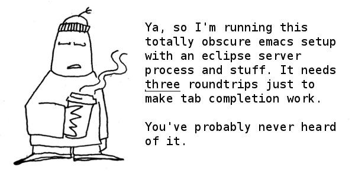
But there are other reasons:
- Free and open source
- Endlessly customizable
- Amazing diff
- Macros
- Text and file searching
- Great programming IDE
- Lossless and endless undo/redo
- Fun!
- …
Getting started can be daunting
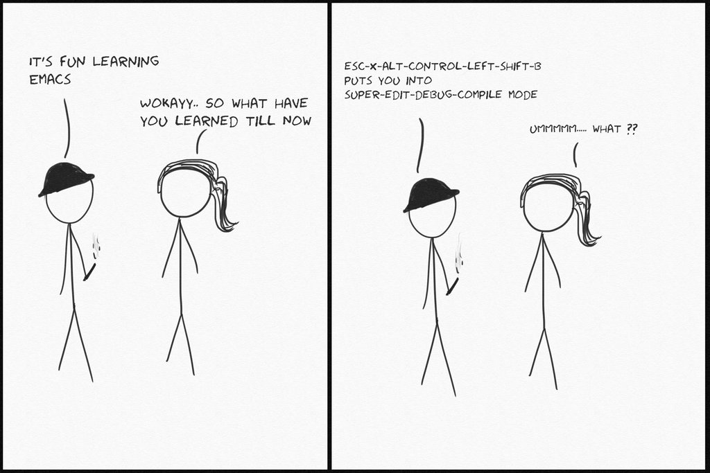
And it doesn’t necessarily get easier.

But it’s all worth it!
A few Emacs concepts
Emacs Lisp
Emacs Lisp is a dialect of the Lisp programming language developed especially to write the editing functionality of the Emacs text editor (the rest of Emacs and its interpreter are written in C).
Emacs is endlessly customizable to anyone with a basic knowledge of Emacs Lisp. In particular, variables and functions setting the behaviour and appearance of the text editor can be created or modified.
The language is well documented.
Graphical display
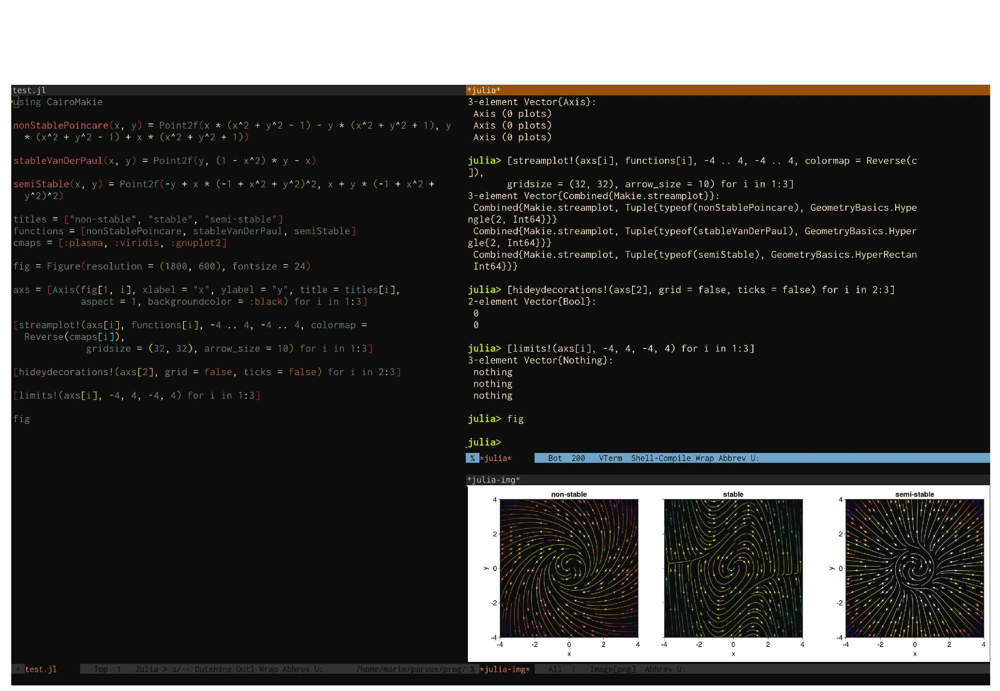
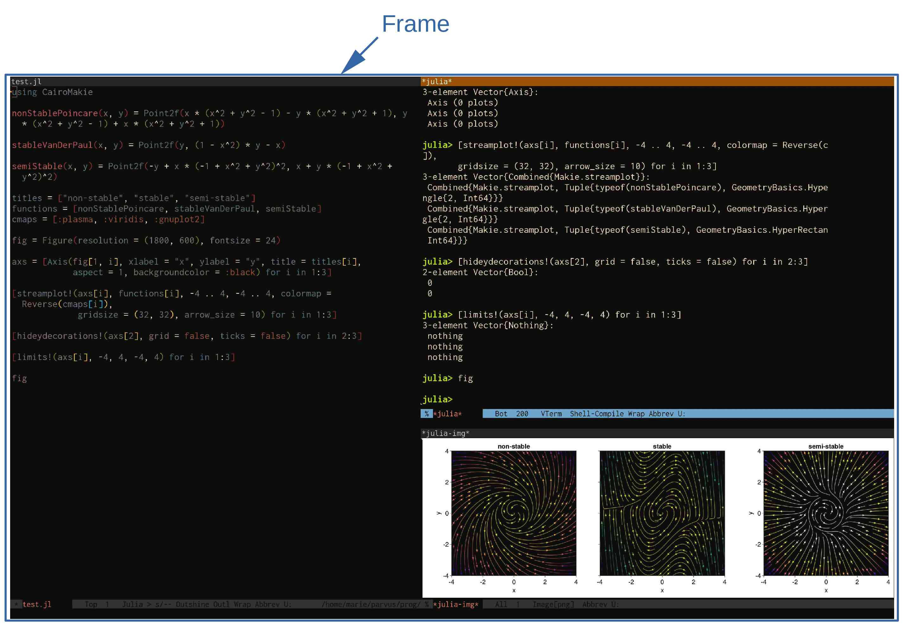
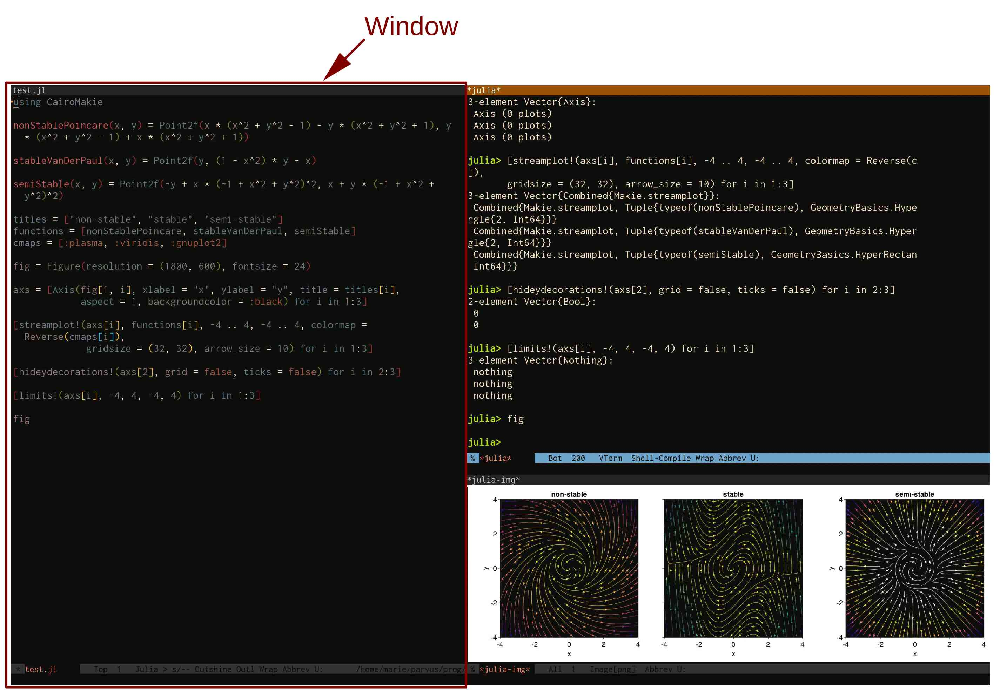
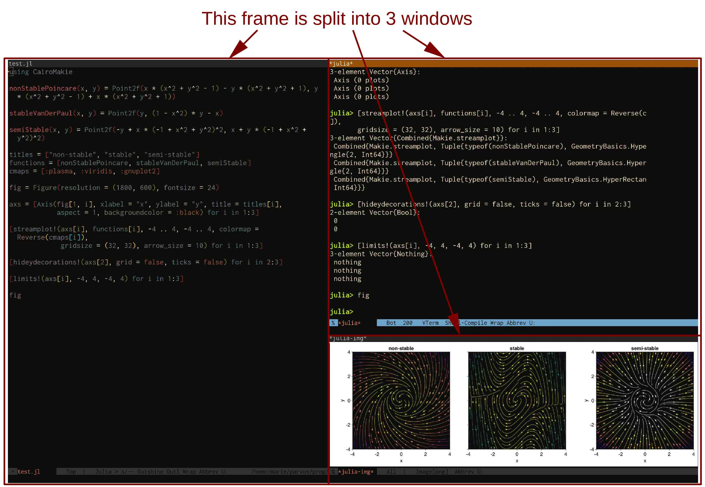
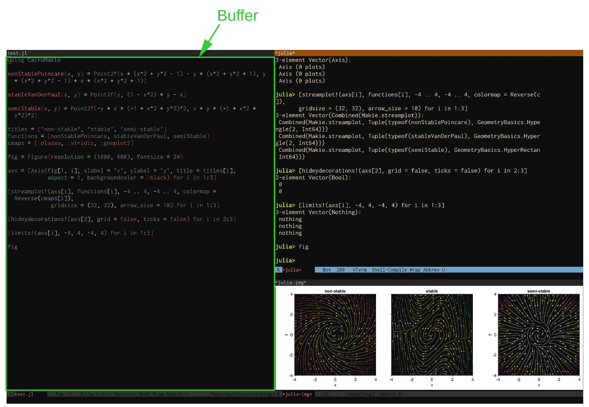
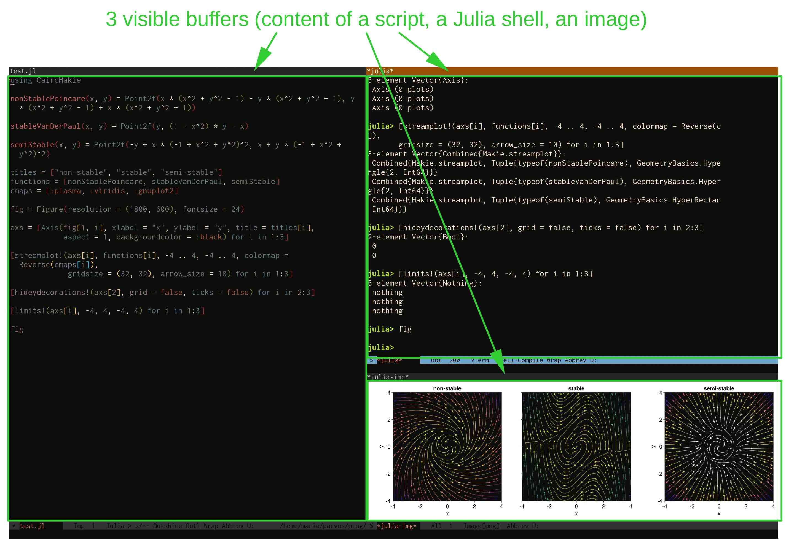
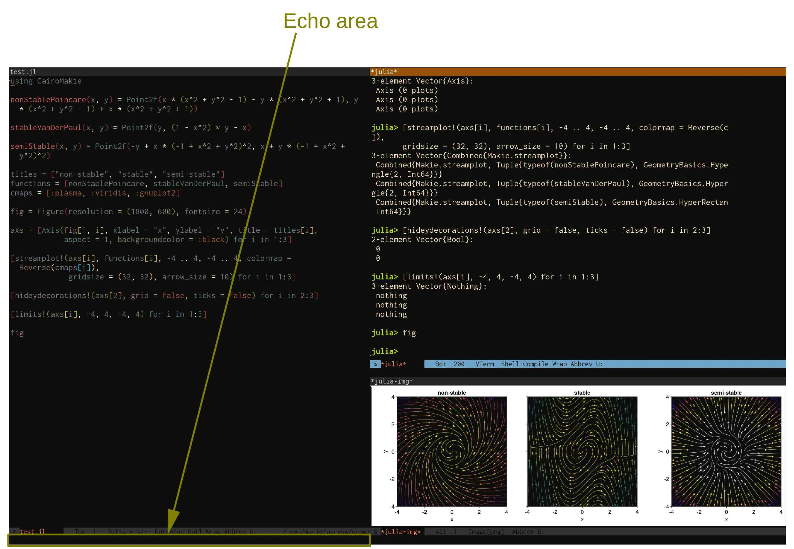
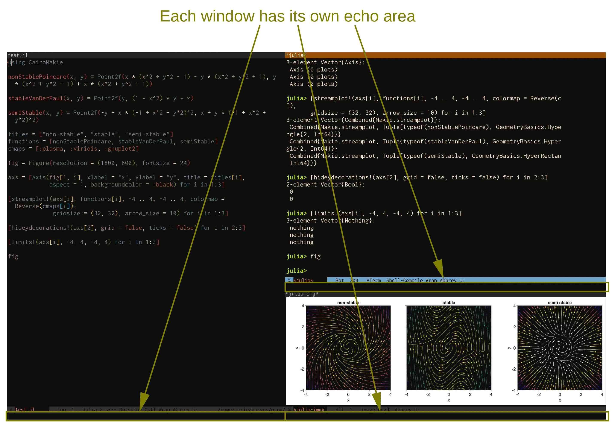
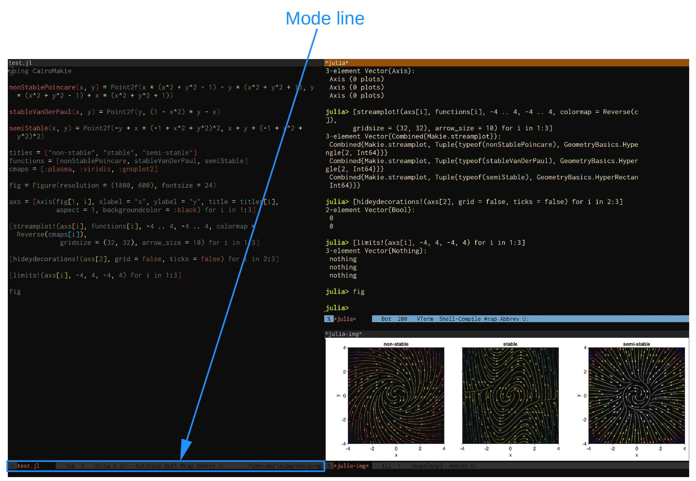
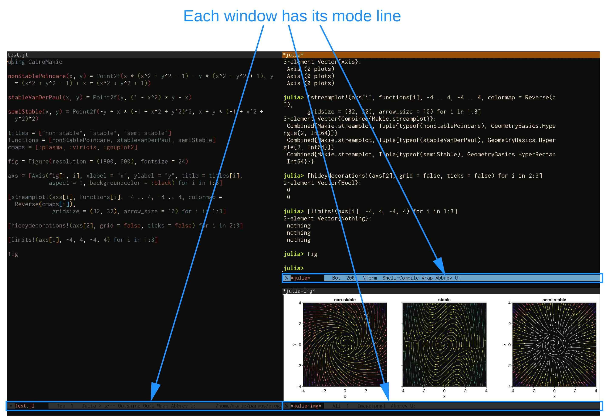
Keybindings (kbd)
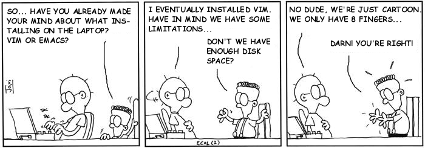
Kbd notations
C-c means press the Control key and the C key together.
M-x means press the Alt (Windows) or Option (macOS) key and the X key together.
C-c m means press the Control key and the C key together, then press the M key.
C-c C-x m means press Ctl+C, then Ctl+X, then M.
C-x C-c M-w C-m M-v M-t M-u means that you probably should choose another kbd.
Command execution
A useful way to execute a command interactively, when it is not bound to a kbd, is to type M-x (this brings up the minibuffer, a place in which to type inputs) followed by the command name.
For example, M-x count-words will output the number of lines, sentences, words, and characters of the current buffer in the echo area.
Time to talk about Emacs modes
Major modes
Different types of text require different behaviours, syntax highlighting, formatting, functions, variables, etc.
Each type of buffer (e.g. Python script, Markdown document, Julia REPL, Bash shell, directory editor, pdf) is associated with a different major mode.
File extensions, particular markers in the file, or other elements tell Emacs to automatically switch to the appropriate major mode.
Only one major mode is active at a time.
Switching to a different major mode is possible by running the corresponding major mode command (e.g. M-x python-mode will switch to Python mode).
Fundamental mode
fundamental-mode is the most basic major mode, with no particular feature.
This is the mode enabled by default if Emacs cannot detect what specific major mode to enable.
Minor modes
Minor modes provide additional and optional features that can be turned on or off (e.g. spell checking, auto-completion, auto-indentation, fancy undo behaviour, fancy parenthesis matching highlighting).
Minor modes can be turned on/off by running the corresponding minor mode commands (e.g. M-x flyspell-mode will turn spell checking on/off). The command consult-minor-mode-menu from the package consult makes this particularly easy.
Each mode comes with a set of commands. consult’s command consult-mode-command makes it easy to search for commands within each mode.
Any number of minor modes can be active at the same time.
List of enabled modes
By default, <f1> m or M-x describe-mode will open a list and description of the active modes.
The major mode can also be determined with <f1> v major-mode (<f1> v runs the command describe-variable).
A list of minor modes can also be viewed with <f1> v minor-mode-list.
Again, consult’s consult-minor-mode-menu makes all this much nicer.
The mode line
Another way to get information about enabled modes is the mode line:
Hooks
Minor modes can be automatically enabled when other modes (major or minor) are enabled thanks to hooks.
For example, to enable the aggressive indent minor mode whenever the ESS R major mode is enabled, you can add to your init file:
(add-hook 'ess-r-mode-hook 'aggressive-indent-mode)Or, using use-package, now part of base Emacs:
(use-package aggressive-indent
:hook (ess-r-mode . aggressive-indent-mode))Modes source code
To see the source code of a mode, run <f1> v (or M-x describe-variable) followed by the name of the mode map.
This will open a help buffer with a link to the source code file.
For example <f1> v text-mode-map will open a help buffer with a link to text-mode.el.
The help buffer opened by <f1> m or M-x describe-mode also gives a link to the source code of the major mode.
Looking at the source code of a mode is very useful to customize it.
Customizing modes
In Emacs, everything is customizable.
To customize modes, you can write Emacs Lisp code in your init file (the configuration file that gets loaded when Emacs launches) or you can use the easy customization interface.
For example, to customize the Markdown major mode, you would run M-x customize-group markdown.
Evaluation order
If you write your own Emacs code, be careful that functions and variables take the value of their last loaded version. The order in which Emacs code is evaluated thus matters.
You want to evaluate as little as possible when you launch Emacs to speed up start-up time (lazy evaluation): you don’t want to load every single package that you have installed.
This means that if you overwrite a function or variable of a mode in your init file, the init file is read at start-up, but when that mode is launched, the default function/variable will overwrite the custom one you wrote in your init file.
To by-pass this problem, you can use eval-after-load.
Example:
(eval-after-load
"markdown"
'(defun markdown-demote ()
...))use-package has the :init and :config keyword symbols that ensure that the following expressions are evaluated respectively before or after the loading of a package.
Customizing kbd
Most modes come with specific keymaps: sets of kbd only active when the mode is enabled. These kbd of course can be customized.
For example, to modify the kbd for the function markdown-outline-previous in the markdown-mode-map:
(define-key markdown-mode-map (kbd "M-p") 'markdown-outline-previous)Or, using use-package:
(use-package markdown-mode
:bind (:map markdown-mode-map
("M-p" . markdown-outline-previous)))Polymode
While it is normally impossible to associate multiple major modes with a single buffer, Polymode allows to insert sections of a major mode within another major mode.
This is extremely convenient for instance to embed sections of code within human text, or even to have code executed within human text (e.g. R Markdown or its successor Quarto, Org Babel).
markdown-mode with snippets of julia-mode:
Julia has "assignment by operation" operators:
```{julia}
a = 2;
a += 7 # this is the same as a = a + 7
```
There is a *left* division operator:
```{julia}
2\8 == 8/2
```Rendered by Quarto into:
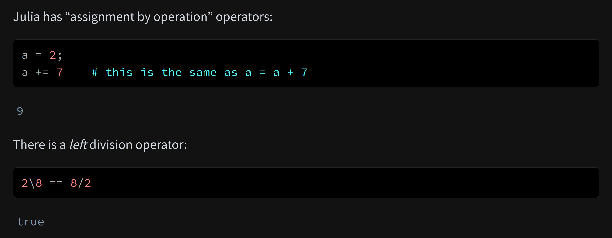